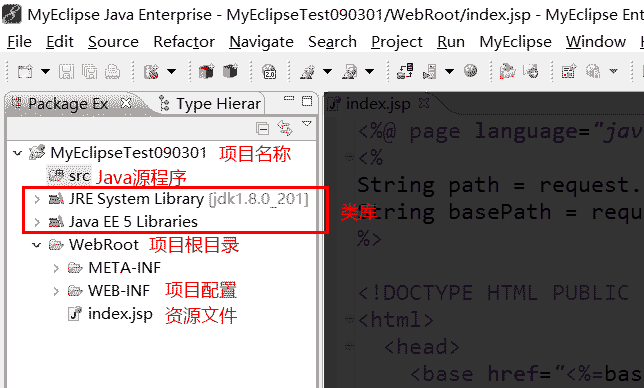

Java Web 应用程序
Web应用程序
Web应用程序开发，是目前软件开发领域三大方向之一。
桌面应用程序：QQ、Office等
Web应用程序：京东、天猫等
嵌入式应用程序：安卓、iPhone
JavaEE方向需求一直较大，也就是就业比较容易和稳定。
静态网页与动态网页
静态网页
表现形式：网页中的内容是固定的，不能自动更新
所需技术：HTML、CSS
动态网页
网页中内容通过程序动态显示，自动更新。
所需技术：HTML、CSS，数据库技术、至少一门高级语言（Java、C#、PHP、Python、GoLang、Node.js、C++等）、JavaScript、XML等。主流的动态网页脚本技术Jsp、Asp.net、Php等
开发环境
JDK7.0+
Tomcat7.0+
Tomcat服务器目录结构：

- MyEclipse or eclipse
手动编写第一个Web程序，步骤：
1.在Tomcat WebApps中创建项目目录
2.编写index.jsp
3.创建WEB-INF目录
4.测试运行
[!TIP|style:flat|label:WEB-INF目录结构：]
WEB-INF是Java web应用的安全目录。所谓安全就是客户端无法访问，只有服务端可以访问的目录。
web.xml，项目部署文件
classes文件夹，用于存放*.class文件。
lib文件夹，用于存放需要的jar包。
# /tomcat9/webapps/examples/WEB-INF
/classes 编译生成的字节码文件
/jsp
/jsp2
/lib 项目需要用的一些java包
/tags
web.xml
[!TIP|style:flat|label:MyEclipse与Eclipse]
MyEclipse 收费，继承了很多收费的插件，比如SSH、安卓等
Eclipse 免费开源，不包含任何附加功能的插件
MyEclipse 配置JRE
# 软件菜单栏
windows -> Preference -> Java -> Installed JREs
# 自定义JDK，默认为1.6
Add... -> Standard VM -> JDK安装目录 -> 勾选并确定
MyEclipse集成Tomcat服务器
# 软件菜单栏
Windows -> Preference -> MyEclipse -> Servers -> Tomcat
# 选择Tomcat服务器
Tomcat 7.x -> Enable -> Brower -> Tomcat安装目录
# 展开Tomcat 7.x
JDK -> 选择自己安装的JDK

创建Web项目
New -> Web Project -> Project Name: Test0703
发布代码
点击发布按钮 -> 选择发布服务器 -> 启动服务器
# 浏览器中访问项目
http://localhost:8080/Test0703
# 注意名称大小写

Web项目目录结构

项目的虚拟路径：默认与项目名称相同
右键单击项目根目录名称 -> Properties

Eclipse
略...